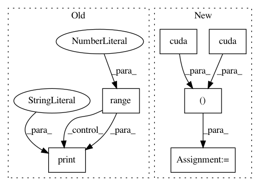

031392ff2cbb5703558d17a676a456521f754190,mnist/main.py,,test,#Any#,87
Before Change
batch_data = Variable(batch_data_t, volatile=True)
batch_targets = Variable(batch_targets_t, volatile=True)
correct = 0
for i in range(0, test_data.size(0), TEST_BATCH_SIZE):
print("Testing model: {}/{}".format(i, test_data.size(0)), end="\r")
batch_data.data[:] = test_data[i:i+TEST_BATCH_SIZE]
batch_targets.data[:] = test_labels[i:i+TEST_BATCH_SIZE]
output = model(batch_data)
test_loss += criterion(output, batch_targets)
After Change
batch_data = torch.FloatTensor(opt.testBatchSize, 1, 28, 28)
batch_targets = torch.LongTensor(opt.testBatchSize)
if cuda:
batch_data, batch_targets = batch_data.cuda(), batch_targets.cuda()
// create autograd Variables over these buffers
batch_data = Variable(batch_data, volatile=True)
batch_targets = Variable(batch_targets, volatile=True)
In pattern: SUPERPATTERN
Frequency: 3
Non-data size: 6
Instances
Project Name: pytorch/examples
Commit Name: 031392ff2cbb5703558d17a676a456521f754190
Time: 2016-12-15
Author: soumith@fb.com
File Name: mnist/main.py
Class Name:
Method Name: test
Project Name: rusty1s/pytorch_geometric
Commit Name: e2db3b3f1d3d23cd5bc1e295835e0f4b33e95447
Time: 2018-03-07
Author: matthias.fey@tu-dortmund.de
File Name: examples/cora_gcn.py
Class Name:
Method Name: